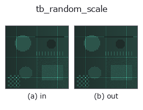

typed op• Data kinds: points → points
• Call: fullseye.apply(img, "tb_random_scale", a=0.5, b=0.5) (2-D model = एक image + दो scalar knobs a,b∈[0,1])

*Figure synthetic 128×128 input पर सच में चलाकर मिला output है। बाईं ओर input, दाईं ओर output। Point clouds ऊपर से देखे गए scatter के रूप में (brightness = z), 1-D series line के रूप में, volumes z दिशा में maximum-intensity projection के रूप में, videos बीच के frame के रूप में, complex images amplitude के रूप में, और जो return values चित्र नहीं बन सकते वे स्वयं values के रूप में दिखाए जाते हैं।*
*Knob a output नहीं बदलता (मापा गया: 0.1 / 0.5 / 0.9 पर एक जैसा)।*
*Knob b output नहीं बदलता (मापा गया: 0.1 / 0.5 / 0.9 पर एक जैसा)।*
Stages (पहले आने वाले ops → यह op, बाएँ से क्रम में):
▸ tb_random_scale: stages का figure (docs site)
दूसरी images पर भी (synthetic scene / photo / coins। ऊपर की row में inputs, नीचे की row में उनके outputs। Knobs default पर):
▸ tb_random_scale: दूसरी images पर output (docs site)
uniform scale s ~ U(lo, hi) को origin के चारों ओर लागू करता है और (scaled, s) लौटाता है।
> नीचे का विस्तृत विवरण मूल text में है — सारांश और headings का अनुवाद हो चुका है।
scaled = points * s。bbox 対角長はちょうど s 倍になる(s > 0 なので max/min が共に s 倍 → 対角 ‖max-min‖ も s 倍)。物体スケールのばらつき(距離/センサ倍率)を学習に注入する。0 < lo <= hi を要求(fail-closed)。
lo <= 0 または hi < lo は ValueError(lo == hi は許され常に s = lo)。原点まわりの拡大なので、雲が原点から離れていれば重心も s 倍の位置へ動く(位置と大きさが同時に変わる)。大きさだけ変えたいなら事前に重心を原点へ寄せる。s は Python float、返り値の点群は float64。seed で決定論的。空入力は空を返す。
2-D 進化レジストリへ橋渡しした 3d の op random_scale。実装は同じで、呼び出し規約だけ op(v, a, b) に合わせてある。この op に調整点は無く、a も b も使われない。
• Sample data catalog (DL URL / license) — 2-D के लिए skimage.data (BSD/public) + synthetic, 3-D के लिए real data sources (Stanford/PDS आदि) के DL URL।
• Operators का स्रोत और संदर्भ — इस op family के मूल research/methods के स्रोत।
नीचे का program सच में चलता है, यह जाँचा गया है (figure वाला ही input)। Studio की help में यह block buttons बन जाता है, जिनसे इसे वहीं load करके चलाया जा सकता है।
img_to_points 0.50 0.50 tb_random_scale 0.50 0.50
▸ यह pipeline load करें · Load करके चलाएँ
नीचे के उदाहरण मूल ledger op random_scale को call करते हैं। यह bridge op वही implementation है, बस fn(v, a, b) convention के अनुसार ढाला गया है, इसलिए व्यवहार वैसा ही लागू होता है (केवल call का रूप अलग है)।
• augment_pointcloud — py -3.11 examples_3d/augment_pointcloud.py
points को input के रूप में लेते हैं)identity · tb_points_to_voxel · tb_estimate_point_normals · tb_iss_keypoints · tb_project_points · tb_render_point_depth · tb_statistical_outlier_removal · tb_radius_outlier_removal
typed)tb_points_to_voxel · tb_estimate_point_normals · tb_iss_keypoints · tb_project_points · tb_render_point_depth · tb_statistical_outlier_removal · tb_radius_outlier_removal · tb_voxel_grid_downsample
*Provenance: ops.py — 2D operator registry. यह per-op note tools/opdocs.py md से अपने-आप generate होता है (हाथ से edit न करें)।*
© 2026 Kazufumi Furuse — Fullseye operator documentation. Licensed under Apache-2.0.